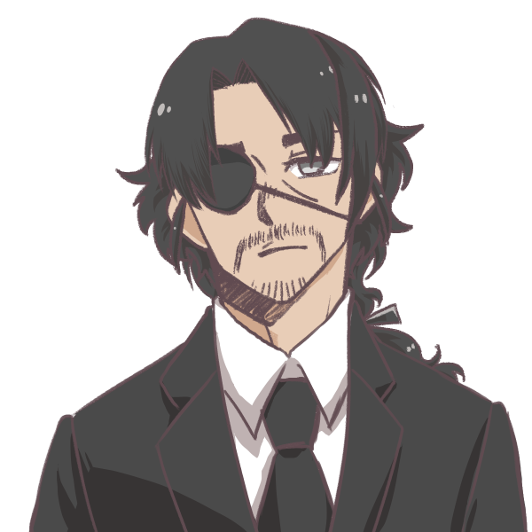
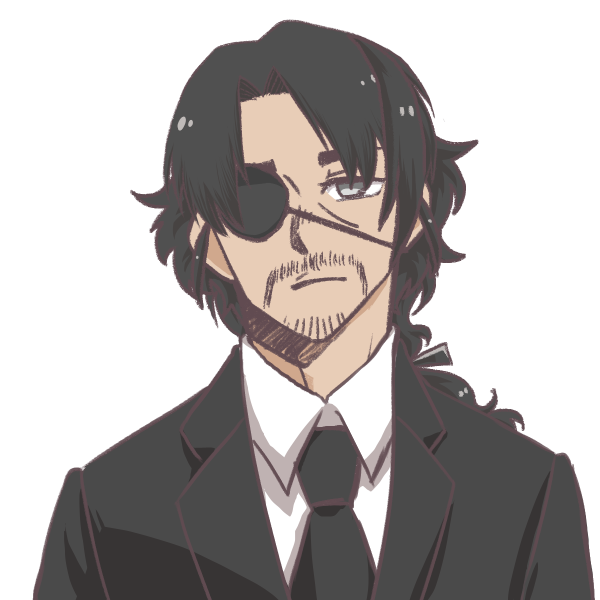
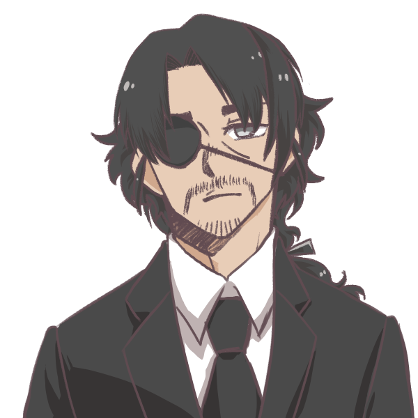

Lucio Gouveio
Homem branco, alto, cabelo grande escuro, cavanhaque, olho direito tapado
Acrobacia: |Investigação: 5 | Adestramento: |Luta: 5 | artes: |Medicina: | Atletismo: 5 |Ocultismo: 5 | Atualidades: |Percepção: 5 | Ciências: |Pilotagem: | Crime: |Pontaria: | Dipolmacia: 5 |Profissão: | Enganação: |Reflexos: 5 | Fortitude: |Religião: | Furtividade: |Sobrevivência: | Iniciativa: |Tática: | Intimidação: |Tecnologia: 5 | Intuição: 5 |Vontade: | ------------------------------------------- Informações adicionais:
Contatos com o PARANORMAL: Baixo Ultimo NEX registrado: 690-5(15%) Conhecimento sobre o oculto: consideravel Nível de confiança: Leal Rituais portados: dec/cic/ilu/amlCON/esc Poderes paranormais: Compreensão Paranormal Conclusão de status = Estavel
Ativ.realizada previamente: detetive Conhecimento bélico: Armas cortantes Preparo físico: mediano Preparo mental: consideravel Função = Investigador Comclusão de status = capacitado Local de atuação = Corvus Equipe atual = I.S.A.C-3 Missão atual = loding..... Status = Ocupacionado
Itens em posse: Custos: componentes(amld) [2]| [ 5,0kg] R$ 16,90 Pé de cabra [1]| [ 2,0kg] R$ 24,99 Lanterna(ttc) [1]| [ 0,2kg] R$ 90,00 Motoserra(mod) [1]| [ 7,0kg] R$164,99 par de algemas [1]| [ 0,5kg] R$ 35,00 Katana [1]| [ 5,0kg] R$105,00 Detec.Atv.Parnml. [1]| [ 2,2kg] R$321,99 Peso total = 21,9 kg Custo total = R$ 758,87
2
1
1
3
2
 
